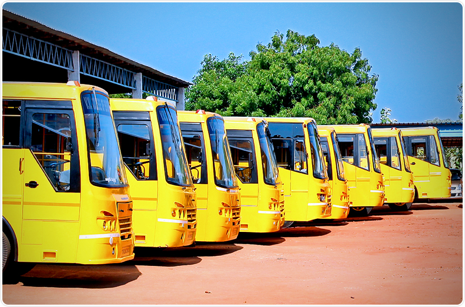
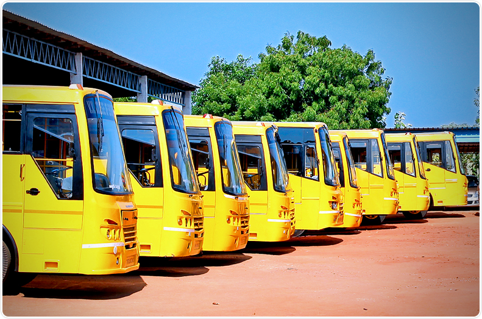
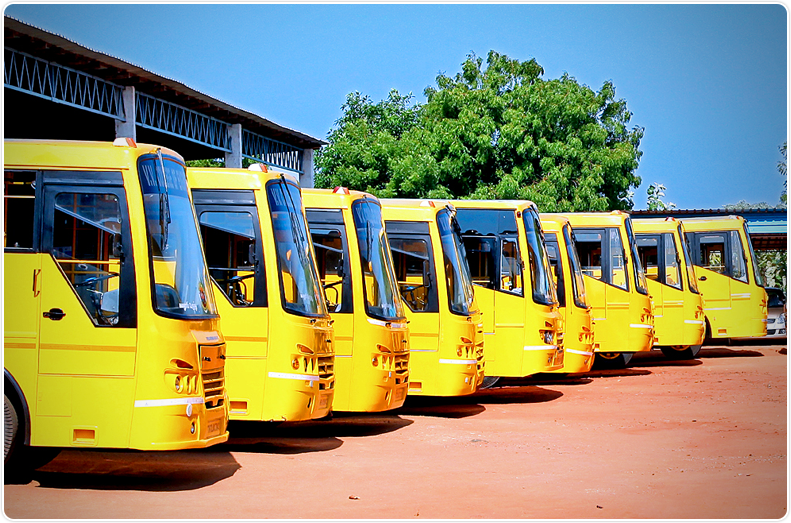
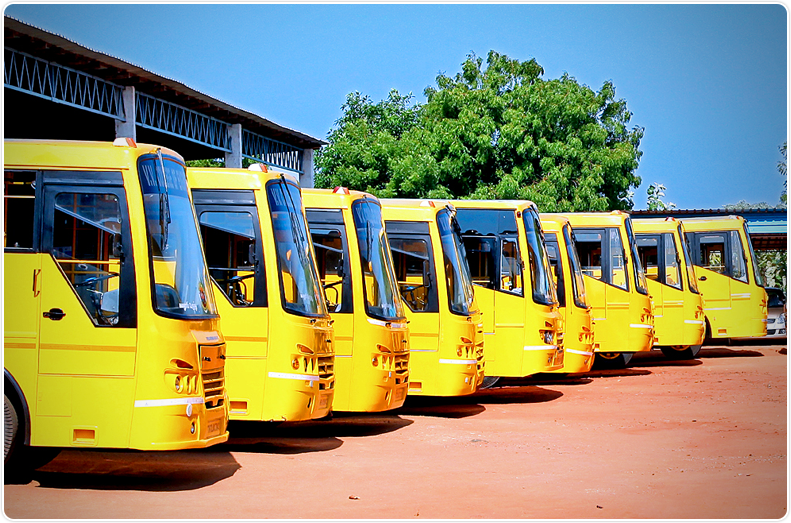

SriChaitanya Techo School
V: Dilsukhnagar M:SarrorNagar D:RReddy PinCode:502561
About Us Services Buses Fee Details Contact Us
24 Ac Buses will run all around the twin cities
 



Buses are goodthese core schools, students in a given country may also attend schools before and after primary (Elementary in the US) and secondary (Middle school in the US) education. Kindergarten or preschool provide some schooling to very young children (typically ages 3–5). University, vocational school, college or seminary may be available after secondary school. A school may be dedicated to one particular field, such as a school of economics or a school of dance. Alternative schools may provide nontraditional curriculum and methods.
Go with these core schools, students in a given country may also attend schools before and after primary (Elementary in the US) and secondary (Middle school in the US) education. Kindergarten or preschool provide some schooling to very young children (typically ages 3–5). University, vocational school, college or seminary may be available after secondary school. A school may be dedicated to one particular field, such as a school of economics or a school of dance. Alternative schools may provide nontraditional curriculum and methods.